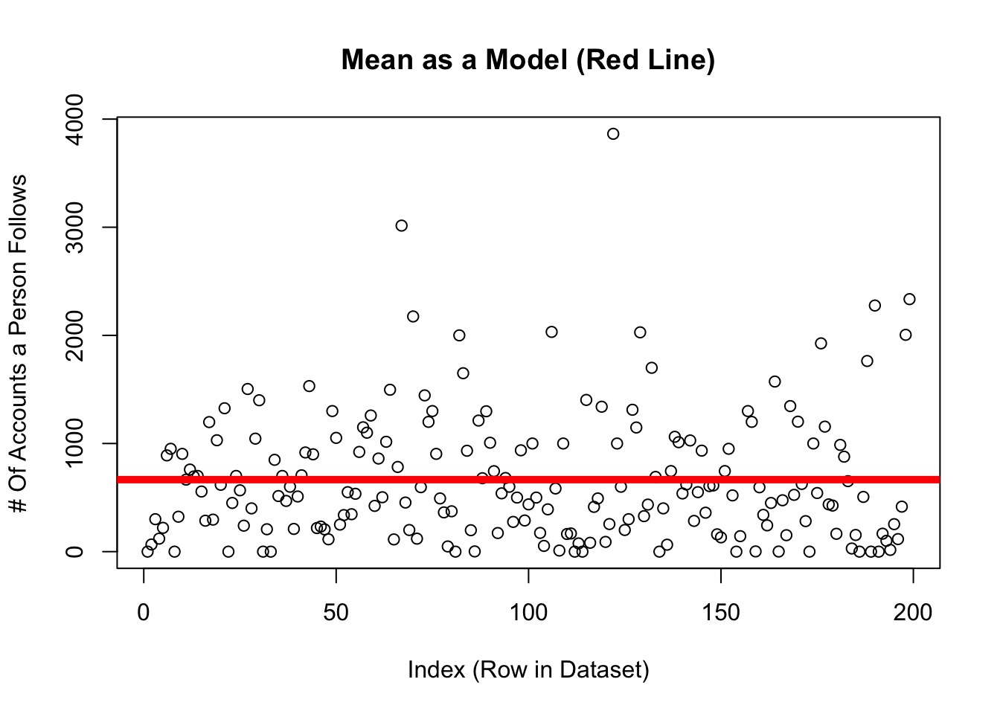

Previously, we discussed how the mean could be used to make predictions of individuals.
\(\huge y_i = \hat{Y} + \epsilon_i\)
\(\Large y_i\) = the DV = the individual’s actual score we are trying to predict (remember \(_i\) = index; a specific individual.)
on the graph: each individual dot (on the y-axis; the x-axis just describes when people submitted the survey.
\(\Large \hat{Y}\) = our prediction (the mean).
on the graph: the solid red line
\(\Large \epsilon\) = residual error = distance between the predicted values of y and the individual’s actual value of y
on the graph: the distance between each dot and the line.
d <-read.csv("~/Dropbox/!WHY STATS/Class Datasets/101 - Class Datasets - FA25/mini_cal_data.csv", stringsAsFactors = T)plot(d$insta.follows, main ="Mean as a Model (Red Line)",xlab ="Index (Row in Dataset)",ylab ="# Of Accounts a Person Follows")abline(h =mean(d$insta.follows, na.rm = T), lwd =5, col ='red')

We also talked about how we could quantify the total error in these predictions, by adding up the squared residual errors (the sum of squared errors).
This number made no sense, but it is a critical statistic, since it quantifies how valid our predictions of individuals were when using the mean to make predictions.
To give the statistics some context, we divided the sum of squared errors by the sample size (this is the variance) and then un-squared this number (by taking the square root). This new statistic - the standard deviation - served as an average of residual error that describes how far the average person differs from the mean.
n <-length(na.omit(d$insta.follows)) # total number of individuals; omitting missing data.sqrt(SST/(n-1)) # the equation for the standard deviation
[1] 598.832
sd(d$insta.follows, na.rm = T) # the function to get the same answer.
[1] 598.832
As scientists, our goal is to make accurate predictions of individuals. So we would want to find a way to make the sum of squared errors equal zero - have no error in our predictions. The mean is a good starting place, but it’s one number. And people are complex.
The mean is an okay starting place for our predictions, but we can try to do better!
DISCUSS :
ICE BREAKER : if you had to live inside one social media platform, what would it be and why???
THINK ABOUT A LINEAR MODEL : how do you think the variables (above) would help (or not help) us predict the number of accounts someone follows on instagram (insta.follows)? Why / why not???
Define the linear model and interpret the intercept and slope of the model.
mod <-lm(insta.follows ~ socmeduse, data = d) # defines the model; saves as modplot(insta.follows ~ socmeduse, data = d) # graphs the relationship.abline(mod, lwd =5, col ='red') # draws a red line of width five based on mod
coef(mod) # shows us the terms inside mod.
(Intercept) socmeduse
96.64377 86.65467
equation for a line : y = a + bX
\(\Large y_i\) = the DV = each individual’s actual score on the dependent variable.
on the graph: the value of each dot on the y-axis
\(\Large a\) = the intercept = the starting place for our prediction. You can think of the intercept as “the predicted value of y when all x values are zero”.)
on the graph: the value of the line at X = 0
\(\Large X_i\) = the IV = the individual’s actual score on the independent variable (a different variable than the DV).
on the graph: the value of each dot on the x-axis
\(\Large b_1\) = the slope = an adjustment we make in our prediction of y, based on the individual’s x value.
on the graph: how much the line increases in y value when x-values increase by 1 unit.
\(\Large \epsilon_i\) = residual error = the distance between our prediction and the individual’s actual y value.
on the graph: the distance between each individual data point and the line.
Activity : Define another model to predict insta.follows from another numeric IV!!!
## Student Examples Go Here?
BREAK TIME : MEET BACK AT 4:30
The Linear Model : Error in Our Predictions
par(mfrow =c(1,2))plot(d$insta.follows, main ="Using the Mean To Make Predictions (Black Line)",xlab ="Index (Row in Dataset)",ylab ="# Of Accounts a Person Follows")abline(h =mean(d$insta.follows, na.rm = T), lwd =5, col ='black')plot(insta.follows ~ socmeduse, data = d,main ="Using Linear Model to Make Predictions") # graphs the relationship abline(mod, lwd =5, col ='red') # draws a red line of width five based on mod
1 Brandt, D. J., Sommer, J., Krach, S., Bedenbender, J., Kircher, T., Paulus, F. M., & Jansen, A. (2013). Test-retest reliability of fMRI brain activity during memory encoding. Frontiers in psychiatry, 4, 163. [Link to Full Article]
2 Bennett, C. M., Miller, M. B., & Wolford, G. L. (2009). Neural correlates of interspecies perspective taking in the post-mortem Atlantic Salmon: an argument for multiple comparisons correction. Neuroimage, 47(Suppl 1), S125. [Link to Full Article]
How would you evaluate the reliability and validity of the STEP COUNTER on your phone???
Term
Way of Testing
face : does our measure or result look like what it should look like?
convergent : is our measure similar to related concepts?
discriminant : is our measure different from unrelated concepts?
test-retest : do we get the same result if we take multiple measures?
interrater reliability : would another observer make the same measurements?
inter-item reliability : would one item in the likert scale be related to others?